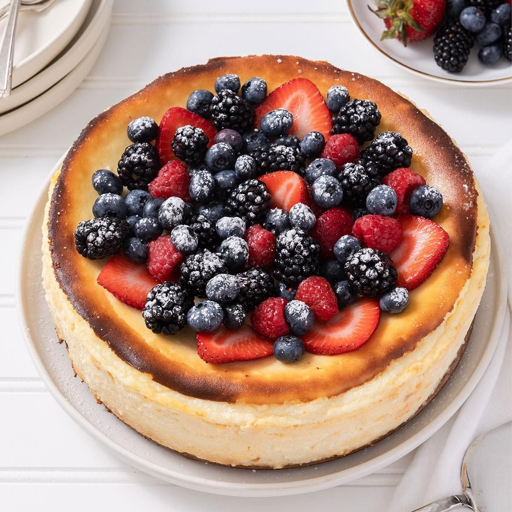
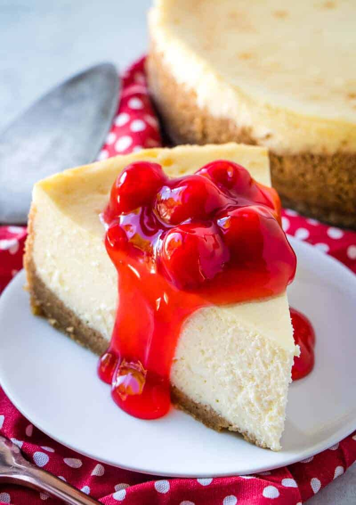

New York Cheesecake

This classic New York cheesecake is ultra rich, dense, and creamy with a slightly tangy flavor and a smooth finish. Perfect for any special occasion or just because you deserve it.
Ingredients
- 1 1/2 cups graham cracker crumbs
- 1/4 cup sugar
- 1/2 cup melted butter
- 4 (8 oz) packages cream cheese, softened
- 1 1/4 cups granulated sugar
- 1 teaspoon vanilla extract
- 4 large eggs
- 2/3 cup sour cream
- 2/3 cup heavy cream
Method
- Preheat oven to 325°F (160°C). Grease a 9-inch springform pan.
- Combine graham cracker crumbs, sugar, and melted butter. Press firmly into the bottom of the pan.
- In a large bowl, beat the cream cheese until smooth and fluffy.
- Add sugar and vanilla, and beat until combined.
- Add eggs one at a time, beating on low speed after each addition.
- Mix in sour cream and heavy cream until fully incorporated.
- Pour batter over the crust and smooth the top.
- Bake for 1 hour. Turn off oven and let cheesecake sit inside for 1 more hour with the door slightly open.
- Remove from oven and chill in the fridge for at least 4 hours or overnight.
- Slice, serve, and enjoy!
